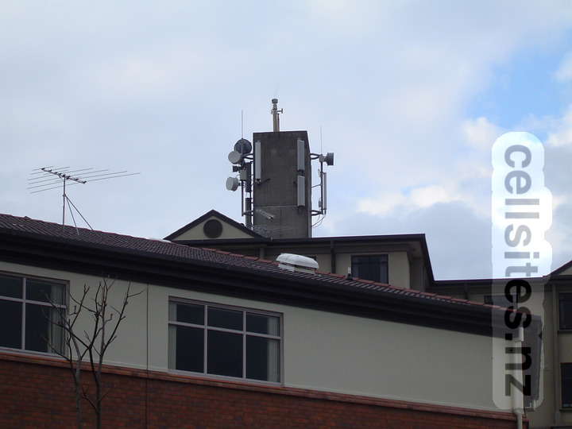
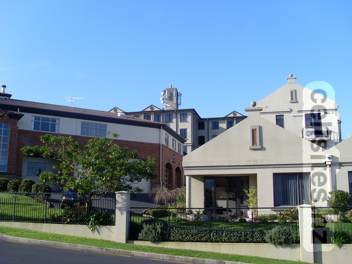
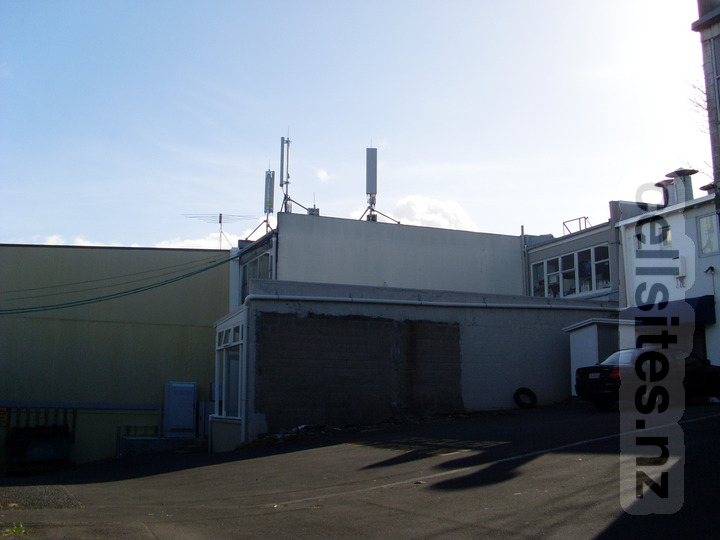
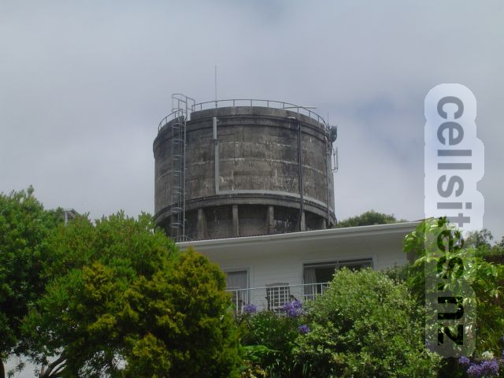
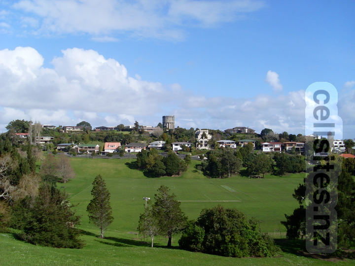
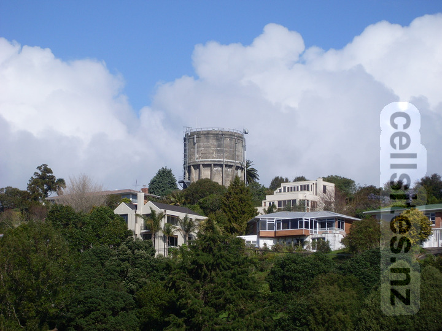

A rare (for its time) example of Vodafone and Telecom sharing the same site. This site was also a significant microwave relay hub for Vodafone, hence several microwave dishes pointing in all dirctions. Some of the dishes would have pointed at the Kohimarama and Waimarie Street sites. Vodafone panel antenna on the left for GSM 900 and UMTS 2100 services. This site is notable for the time as having both 900 MHz and 2100 Mhz services delivered over the same antenna (rather than separate antennas for 900 MHz and 2100 MHz common at most other sites) suggesting space was an issue here. Spark pair of panel antennas on the right for various 850 MHz services. 28 August 2005.

No major changes since the 2005 photo above. Some (if not all) of the Vodafone dishes were upgraded to improve backhaul capacity for UMTS services. Telecom replaced the lower half of their antenna pairs, possibly to support the introduction of UMTS services the following year. 2 September 2008.
2degrees St Heliers
Note: This site no longer exists.

This was one of the first 2degrees sites to be built before they launched the following year. 2 September 2008.
Vodafone/Woosh Waimarie Street

Woosh Wireless antennas can be seen on the side of the water tower. Vodafone at the time used this as a simple microwave relay between their Glendowie and St Heliers Bay sites, a situation that remained unchanged from the early 1990's until they added antennas for mobile services some years after this photo was taken. The pair of microwave dishes can just be seen on the top-right of the water tower. 8 January 2004.

A shot further away showing the surrounds of this site. 2 September 2008.

A closer shot show no change compared to the 2004 photo above. Vodafone had not yet added antennas for mobile services. Vodafone's microwave dishes can clearly be seen from this angle. 2 September 2008.